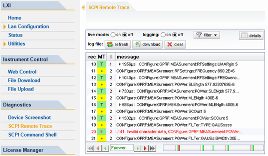
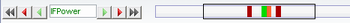

The remote trace functionality allows you to trace input and output strings at the remote control interface of the R&S CMW.
A recorded trace (message log) can be evaluated directly in the dialog. Use the highlighting and navigation functions provided by the lower toolbar to locate error messages and messages containing arbitrary search strings. You can also export the message log to a CSV file and evaluate the file using a suitable program.
To trace and display messages, switch on "logging" and "live mode" via the toolbar.

The toolbar at the top of the dialog provides basic settings and functions.
- "live mode" / "logging": If logging is switched on, messages are traced. They are stored in an internal database and can be displayed upon request, using the refresh button (live mode off) or they can be displayed automatically (live mode on).
- "filter": applies a filter to columns and/or rows
- "refresh": reads the message log from the internal database and displays it
- "download": stores the message log database to a CSV file
- "clear": deletes all message log entries in the database and at the screen
- "details": shows all fields of the selected message (also possible by double-clicking a message)
If the displayed log contains messages, a second toolbar is displayed at the bottom of the dialog. It facilitates navigation within comprehensive message logs.

- Double arrow buttons: show the previous or next page
- Red arrow buttons: navigate to the previous or next error message
- Green arrow buttons: navigate to the previous or next message containing the entered search string (e.g. IFPower)
- Text field: The entered search string is highlighted in the entire message log by green color. The scroll bar indicates the message positions by green bars.
- Scroll bar: The scroll bar to the right of the buttons covers the entire message log, while the rectangle marks the currently displayed section. You can move the rectangle to scroll through the message log. The position of certain messages is indicated by colored bars:
– Red bar: indicates an error message – Orange bar: indicates an error message containing the search string – Green bar: indicates another message containing the search string
The following columns are available if no column filter is applied:
- "rec": record number of the message within the message log
- "time stamp": date and time of the message with a resolution of 1 ms, e.g. time when a reported error occurred
- "channel": VISA string of the traced remote control channel
- "MT" / "message": MT indicates the type of the message. Possible values and related message contents are:
– > = incoming command – < = outgoing response to a query – E = error message, highlighted by red color – T = execution time, i.e. time required by the instrument to process the command internally - "I": number of the subinstrument